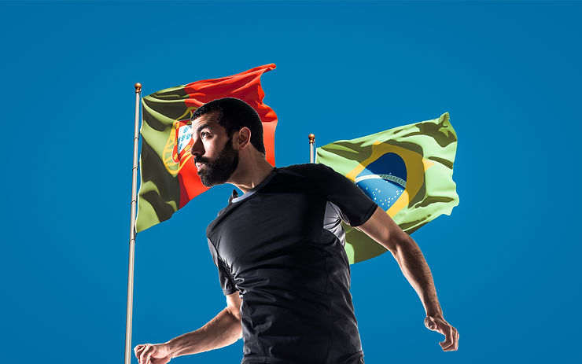

Dia 20/03, às 13 horas, os Psicólogos do Esporte Pedro Assis, de Portugal, e Marina Gusson, do Brasil, abordam a “Psicologia do esporte no meio de campo: as particularidades da atuação no futebol no Brasil e em Portugal” em um dos web-cursos de verão da Associação Brasileira de Psicologia do Esporte, ABRAPESP
O que é ser profissional nessa área? De um lado a experiência do Pedro, principalmente o seu trabalho com o clube (hoje a equipe masculina do F.C. do Porto); e do outro, o conhecimento da Marina e a Seleção Brasileira de Futebol Feminino.
“A ideia é discutir como é a realidade desses ambientes do universo do futebol, e as características do trabalho do psicólogo do esporte” – Marina Gusson
“O objetivo também é confrontar a realidade portuguesa com a realidade brasileira. O que se faz em Portugal e o que se faz no Brasil. Muitas vezes chegamos a conclusão que é um trabalho muito parecido, e noutras, bem diferente. Lógico que existem as questões culturais, o trabalho com as mulheres talvez tenha que ser diferente do trabalho com os homens, mas o que queremos é mostrar como conseguimos intervir nessas realidades”, diz Pedro
“O trabalho do psicólogo não requer atenção somente no atleta, mas também temos focos de intervenção da comissão técnica, dos treinadores, das famílias” complementa Marina
O impacto da pandemia no futebol também deve surgir na conversa: “afinal é algo ainda muito presente, muito incerto. É, por exemplo, o assunto da semana na Federação Paulista, também na Seleção, já que amistosos vêm sendo desmarcados. É uma questão mundial”, afirma Marina.
ABRAPESP – Como carreira, o que é atraente?
Pedro – A área da psicologia do esporte já existe há muitos anos, e vem sendo cada vez mais valorizada. Os clubes, as federações percebem os fatores mentais no desenvolvimento dos atletas. Com a Psicologia do Esporte, os treinadores conseguem ajuda na melhoria do desempenho dos atletas. É isso que queremos: compartilhar o que fazemos um dia-a-dia, nosso entusiasmo, nossa paixão”
Marina – Uma coisa é eu e Pedro dizer: somos apaixonados por nosso trabalho! Outra é somos apaixonados por futebol e meu time é… Podemos ter nossos times favoritos, ter opinião de torcedora, mas tem que ter claro que quando você está ali, você é um profissional da saúde e tem que estar comprometida com este aspecto. Se não você perde a clareza.
Não há dúvidas que o tema é apaixonante. Já fez sua inscrição? Não perca a oportunidade. Acesse: nosso site
Marina Gusson é psicóloga clínica graduada em Psicologia (USP-Ribeirão Preto) e possui especialização em Psicologia do Esporte e do Exercício – Instituto Sedes Sapientiae –SP. Formação em Clínica Reichiana – Instituto Sedes Sapientiae –SP. Psicóloga dos Núcleos de
Formação do Bradesco Esportes – Osasco (2005-2011). Psicóloga da Seleção Brasileira de Karatê dos Jogos Panamericanos Rio 2007. Psicóloga da Unidade de Rebilitação Cardíaca do InCor-SP (2011-2014). Psicóloga da Confederação Brasileira de Atletismo (2014-2017) –
Jogos Olímpicos – Rio 2016. É Psicóloga Esportiva do SESI-SP (desde 2014) e da Seleção Brasileira de Futebol Feminino (desde 2019).
Pedro Assis possui Licenciatura e Mestrado em Psicologia Clínica e da Saúde (UFP, Porto), Pós-Graduação em Psicologia do Desporto e da Atividade Física (ISPA, Lisboa). Formação em Coaching, PNL e Hipnose Clínica. Formação Avançada em Psicologia de Alto Rendimento Desportivo, Psicologia do Desporto para o Desenvolvimento de Atletas e Psicologia para o Treinador no Alto Rendimento (Barça Innovation HUB). A nível profissional: Futebol Clube do Porto (atualmente, desde 2008/09): Casa do Dragão (residência dos
atletas da formação de base). Ao longo das época tive contato com todos os escalões,
desde sub7 a sub17. Atualmente (2020/21) integrado da equipe técnica dos sub16.
Formador dos cursos de treinadores UEFA C e B. Formador da Ordem dos Psicólogos
Portugueses para Workshop de Intervenção em Psicologia do Desporto. Formador da
Federação Portuguesa de Natação e do Instituto do Desporto de Portugal.